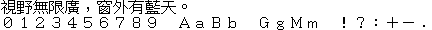

字样资料 / 三国志Ⅴ DOS ZIKU
三国志Ⅴ（DOS）· 16×14
已恢复13,052个主汉字的映射，固定中文样句完整；前684个符号／部首／控制图形槽仅部分映射核实。西文行是原库全角字形，不计普通ASCII覆盖。 · 16×14 · 繁体
放大观察 · 3×

原尺寸 · 1×
来源与字样信息
- 家族
- 三国志Ⅴ DOS ZIKU
- 排版说明
- 每字16宽×14高，1bpp逐行MSB在左，每字28字节。按原16px存储字框作等宽预览，中文y=0、西文y=16；16px字进与2px行间距是本预览排版约定，游戏字距和基线未验证。不缩窄、补画或借字，不是游戏画面复刻。西文末尾点号采用旧TCA U+2024，现代CNS同位置为U+FF0E；不称原生半角ASCII。
- 字符框
- 16×14 px
- 字符范围
- 繁体
- 样本文字
- 視野無限廣，窗外有藍天。
- 全角英数样文（非ASCII）
- ０１２３４５６７８９ ＡａＢｂ ＧｇＭｍ ！？：＋－․
- 覆盖说明
- 已恢复13,052个主汉字的映射，固定中文样句完整；前684个符号／部首／控制图形槽仅部分映射核实。西文行是原库全角字形，不计普通ASCII覆盖。
- 缺字
- 样文无缺字
- 样张类型
- 原生16×14汉字与全角英数；非半角ASCII，按原存储字框等宽预览。
- 风格
- 未分类
- 用途
- 历史屏幕字库
- 字形来源
- 第三方存档副本内的ZIKU.16P，游戏包哈希与rwv/chinese-dos-games资源索引一致；没有实体原盘读取链，不称为原盘dump。未执行游戏，字形作者和创作年代未核实；宏碁／龍碟关系仅作历史线索。
- 授权状态
- 许可待核实
- 许可说明
- 原字体再分发与商用许可未确认；第三方存档可取得、码表或转换工具开源均不代表原字库获准再分发。仅展示固定预览和无字模重绘脚本，不公开游戏资源、完整字体、全库映射或位图数组。
- 说明
- 与KC国乔15繁体、UnionWay双桥16、GNU intlfonts ETen Taipei16逐同码位比较13,051个共同主汉字，仅裁空白边缘且不缩放，分别只有1／0／3字相同，不是这些字体的整库重复。另与提交1d003b3的221项原生预览第一行比较均不同，非221套完整字库全量去重。保留彞U+5F5E原字形，不以Windows TCA的彝替换。符号候选仍有分歧，不能宣称完整Big5或13,736槽Unicode映射全部核实。
- 获取方式
自行取得并确认有权处理指定ZIKU.16P；用render_san5_specimen.py校验精确SHA与长度，仅重绘已核两行固定PNG。无完整字体导出，符号候选及末尾96字节另记限制。
- 来源
- DOS游戏存档资源索引
- 原生证据
说明：精确哈希ZIKU.16P内13,736个完整16×14槽，另96字节未解释。13,052主汉字非空且位图各不相同；CNS与Windows TCA交叉核对，边界和90个次常用字目视抽验，非逐字人工认证。
source_sha256：94c3a14bec8930525d798e891d8b3493f64ca292e25ef36d8d7cd3ad18a46bd5
sourceBytes：384704
storageCell：16、14
bitsPerPixel：1
bytesPerGlyph：28
sourceSlots：13736
prefixSlots：684
mainHan：13052
commonHan：5401
extraHan：碁
rareHan：7650
uninterpretedTailBytes：96
allSymbolMappingsVerified：False
physicalDumpVerified：False
gameEncodingVerified：False
metricsStatus：preview-convention-not-verified-game-metrics
查看原生设计来源
字体使用与再分发按原来源许可执行。